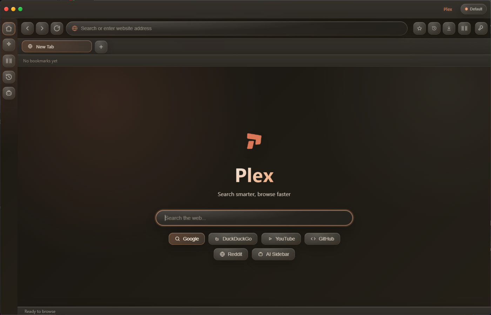
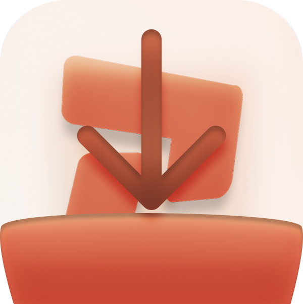
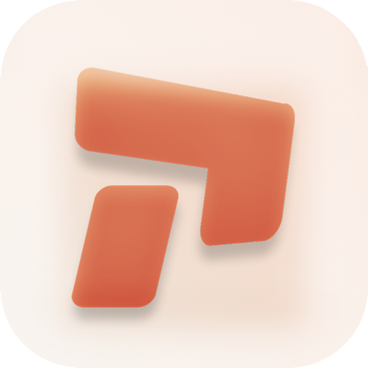

Windows
Plex Browser Setup 2.0.0.exe
Download .exe ↓
Plex Browser 2.0.0 brings the new interface to everyone — a warm, focused browser with glassy depth, quick access to AI tools, privacy controls, performance modes and the workflow features already built into Plex.

Choose your platform below. The release is public — no invite, beta access or early-access membership needed.

Plex keeps its controls close without turning the browser into a dashboard. Most of the time, the interface gets out of the way.
Type less and get moving faster with search suggestions and quick destinations right where you already browse.
Ad, tracker and DoH blocking with an encrypted cookie vault.
CPU, RAM and bandwidth budgets across Eco, Balanced and Performance modes.
Useful suggestions appear as you type so common searches and destinations take fewer steps.
Keep playback controls close in a compact browser widget without jumping between windows.
Color-coded groups and named profiles for separate workspaces.
No early-access gate. No 1.x launch copy. This page is for the current public release.
The current UI uses a warmer palette, depth and translucent surfaces to match the browser itself without burying the controls in effects.
Search suggestions and quick destinations help you get where you are going with fewer keystrokes.
Use Eco, Balanced or Performance behavior to manage CPU, RAM and bandwidth budgets.
A compact player keeps music controls available without taking over the browsing experience.
Privacy controls include ad, tracker and DoH blocking plus the encrypted cookie vault described by Plex.
The release page carries the same warm dark palette, rounded controls and restrained glass treatment as the browser itself.

Yes. Version 2.0.0 is presented here as the public stable release, not an early-access or private-beta build.
The release page provides downloads for Windows, macOS and Linux.
No account is required for the download flow shown on this release page.
They point to the downloads/v2.0.0/ folder so you can drop your actual installer files into that directory when publishing the site.
Version 2.0.0 is out now for the public. Pick your platform and install it.